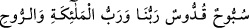

(a.s.) ona: “Hayır, bilakis dostum Azîz ve Celîl olan Allah.” diyerek karşılık verdi. Bu
yüzden Allah, onu “Halîl”, yâni dost diye isimlendirmiştir.
Bir habere göre melekler Hz. İbrâhim (a.s.)’ın malının ve hizmetçilerinin çokluğuna
hayret etmişlerdi. Çünkü onun, boyunlarında altın tasmaları olan köpeklerin beklediği
beş bin koyunu vardı. Bir melek insan sûretine bürünüp, çölde sürüsüne bakan İbrâhim
(a.s.)’a sokularak:
“Sübbûh ve Kuddûs olan Allah bizim, meleklerin ve
rûhun Rabbidir.” dedi. Bunun üzerine İbrâhim (a.s.) ona: “Rabbimin zikrini tekrarla
sana gördüğün şu mallarımın yarısını vereyim.” dedi. Melek sözünü tekrar etti. Bunun
üzerine İbrâhim (a.s): “Rabbimin tesbîhini tekrâr et, gördüğün malımın hepsini sana
vereyim.” demiştir. Bu durumdan melekler hayrete düşmüşler ve şöyle demişlerdir:
“Sen, Allah’ın seni halîl (dost) edinmesine layık bir kimsesin. Böylece İbrâhim (a.s.)
meleklerin lisanıyla da “Halîl” diye adlandırılmıştır.”
Kadı Iyad “eş-Şifâ” adlı eserinde şöyle demiştir: Dost, oğuldan daha kuvvetlidir.
Çünkü oğul bâzan düşman olur. Nitekim Allah Teâlâ “Eşlerinizden ve çocuklarınızdan
size düşman olanlar da vardır.” (Teğâbün, 64/14) buyurmuştur. Oysa dostlukla
düşmanlık bir arada bulunmaz. Allah ile dostluğun şartı, kulun bütün hallerinde Allah
için Allah’a teslîm olması, gönlünde Allah’la berâber hiçbir şeyi saklamamasıdır.
Bunlar ister malı, bedeni, nefsi, rûhu, kalbi, âilesi ve çocukları olsun. İşte İbrâhim
(a.s.)’ın hali böyleydi.
Bir can ki canana kurban değildir
Ten cîfesi öyle candan daha üstündür
Kim ki dostun kılıcıyla ölmemişse
Murdar leş onun canından daha iyidir
Sevginin şartı seven kimsenin sevgide fani olması ve sevgilide bakaya ermesidir.
Öyle ki, seven kimsede sevgiliye muhabbetten başka birşey kalmaz. Bu, Hz. Muhammed
(s.a.v.)’in hâlidir.
Âmiroğullarından bir mecnuna (Hak âşığına) “İsmin nedir?” diye sorulduğunda
“Leylâ’dır.” demiştir.
Şeyhim, dayanağım ve bedenimdeki rûhum mesâbesinde olan Osman Fazlı Efendi
“Kitâbü’l-Lâihâti’l-berkıyyât” adlı eserinde şöyle demiştir: Ahadiyyet-i ilâhiyyeye
dostluk ve muhabbet, Peygamberimiz Hz. Muhammed (s.a.v.)’e hakîkati ile, Hz. İbrâhim
(a.s.)’a sûreti ile, başkalarına ise kabiliyetlerine göre cüz’î özellikleriyle tecellî
etmiştir.